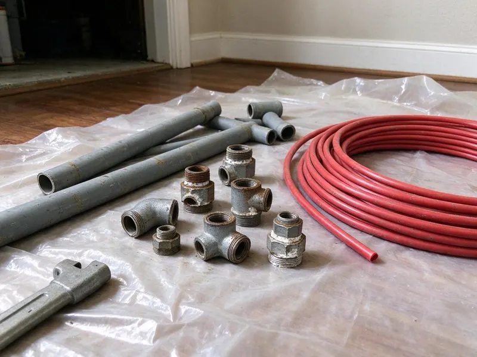

Tankless Water Heater Replacement in The Woodlands, TX
Upgrade your water heating system with a high-efficiency tankless unit from DFJ Plumbing in The Woodlands, TX, for long-term comfort and savings.
- Fast Tankless Installation
- Expert, Licensed Plumbers
- Top Brands Available
- Transparent Pricing

Get Your New Tankless Water Heater Installed in The Woodlands, TX.
Our team is ready to help you choose and install the perfect tankless unit for your home's needs.
Expert Tankless Water Heater Replacement in The Woodlands, TX
When your old tankless unit is failing or you're ready to switch from a traditional tank, DFJ Plumbing offers reliable tankless water heater replacement services. Our licensed plumbers ensure your new system is sized correctly and installed to meet all local The Woodlands, TX codes, providing you with on-demand hot water for years to come.
Our expertise includes:
- Precise sizing and installation of new tankless units.
- Flawless integration with existing plumbing and gas lines.
- Expert removal and disposal of old water heaters.

Additional Plumbing Replacement Services in The Woodlands, TX
When repairs are no longer enough, our replacement services in The Woodlands, TX deliver durable upgrades that restore full performance.


Customers
Why Choose DFJ Plumbing for Tankless Water Heater Replacement in The Woodlands, TX?
Our expertise ensures your new tankless unit is installed correctly the first time, preventing common issues that can arise from improper sizing or connection.
- Energy Savings, Tankless water heaters only heat water when you need it, which can significantly reduce energy consumption compared to traditional tank models, a big plus for Texas utility bills.
- Endless Hot Water, Never run out of hot water again, even during peak demand, a true luxury for busy The Woodlands households with multiple showers or large families.
- Space Saving, Their compact design allows tankless units to be installed in smaller spaces, freeing up valuable real estate in your utility closet or garage.
Citywide Coverage
DFJ Plumbing proudly serves every neighborhood and community within The Woodlands for all your tankless water heater replacement needs. Whether you're in the heart of downtown or the surrounding suburbs, our team is ready to deliver prompt and professional service.
Experienced Team
Our plumbing team consists of highly trained and licensed professionals with extensive experience in tankless water heater technology. We are continuously educated on the latest models, installation techniques, and local Texas plumbing codes.
Safety-First Approach
We take extra care with gas and water line connections, ventilation, and pressure relief systems, providing you with a replacement that not only works perfectly but also meets the highest safety standards.
Trusted Certified The Woodlands Plumbing Services Professionals
At DFJ Plumbing, we take pride in providing certified plumbing services throughout The Woodlands, TX. Backed by recognized industry credentials, our experienced plumbers combine technical skill with genuine customer care. Whether it is repair, installation, or maintenance, we follow strict safety and quality standards to deliver lasting results you can trust.
Call Us Now PHCC Plumbing Contractor Recognition
PHCC Plumbing Contractor Recognition Better Business Bureau (BBB) Accreditation
Better Business Bureau (BBB) Accreditation Angi Certified Pro
Angi Certified Pro ISO 9001 Quality Management Certification
ISO 9001 Quality Management CertificationReliable Tankless Water Heater Replacement Services in The Woodlands, TX
Residential Tankless Water Heater Replacement in The Woodlands
For homeowners in The Woodlands, upgrading to a tankless water heater offers significant benefits like endless hot water and reduced energy consumption. We assess your household's hot water demand to recommend the ideal sized unit, ensuring you get optimal performance. Our team handles everything from safely disconnecting your old unit to installing the new tankless system, including all necessary gas and water line adjustments and venting modifications to meet current codes.

Commercial Tankless Water Heater Replacement in The Woodlands, TX
Businesses in The Woodlands, TX often require robust hot water solutions, and tankless systems can provide the efficiency and capacity needed. We specialize in replacing commercial tankless units for restaurants, offices, and other facilities, ensuring minimal disruption to your operations. Our plumbers are skilled in working with high-capacity models and complex plumbing configurations, delivering a reliable hot water supply that meets your business's specific demands and health code requirements.
Rinnai Tankless Water Heater Replacement in The Woodlands
Rinnai is a leading brand in the tankless water heater market, known for its quality and innovation. If your Rinnai unit is aging or malfunctioning, DFJ Plumbing provides expert Rinnai tankless water heater replacement services in The Woodlands. We ensure your new Rinnai unit is installed correctly, maximizing its efficiency and lifespan. Our technicians are familiar with the specific installation requirements and venting options for all Rinnai models, guaranteeing a seamless upgrade.
Navien Tankless Water Heater Replacement in The Woodlands, TX
Navien tankless water heaters are popular for their condensing technology, offering high efficiency and performance. When it's time for a Navien tankless water heater replacement in The Woodlands, TX, you can count on DFJ Plumbing. We have extensive experience with Navien's advanced systems, including their combination boiler and water heater units. Our installation process focuses on optimizing your new Navien's performance, ensuring you benefit from its energy-saving features and reliable hot water output.
Gas Tankless Water Heater Replacement in The Woodlands
Many homes in The Woodlands rely on natural gas for their water heating, and gas tankless units are a highly efficient option. Our gas tankless water heater replacement service includes careful inspection of your existing gas lines, proper sizing of new gas lines if needed, and secure venting to the outdoors. We prioritize safety and ensure all gas connections and combustion air requirements meet strict Texas and local codes, preventing potential hazards and maximizing efficiency.
Electric Tankless Water Heater Replacement in The Woodlands, TX
For properties without natural gas access or those looking for an all-electric solution, electric tankless water heaters are a viable choice. DFJ Plumbing offers electric tankless water heater replacement services in The Woodlands, TX. This often involves careful assessment of your home's electrical panel capacity, as these units require significant amperage. We ensure your new electric tankless unit is installed safely and effectively, providing on-demand hot water without the need for gas lines.
Emergency Tankless Water Heater Replacement in The Woodlands
A sudden tankless water heater failure can leave your The Woodlands home without hot water, which is a major inconvenience. DFJ Plumbing offers emergency tankless water heater replacement services to restore your hot water quickly. We prioritize urgent situations, working to diagnose the issue and, if replacement is necessary, get a new unit installed as soon as possible. Our goal is to minimize your downtime and get your home back to normal with reliable hot water.

Tankless vs. Tank Water Heater Conversion in The Woodlands, TX
Considering converting from a traditional tank water heater to a tankless system in your The Woodlands, TX home? This is a common and beneficial upgrade, but it requires specialized expertise. We handle the entire conversion process, which can involve rerouting gas lines, upgrading electrical service, modifying water lines, and installing new venting. Our team ensures a smooth transition, allowing you to enjoy the long-term benefits of a modern, efficient tankless system.
Tankless Water Heater Replacement Near Me in The Woodlands, TX
Looking for 'tankless water heater replacement near me' in The Woodlands, TX? DFJ Plumbing is your local expert, providing prompt and professional services across the entire metropolitan area. Our team is strategically located to respond quickly to your hot water needs, ensuring fast and efficient service right to your doorstep.
When your tankless unit needs replacing, you want a trusted local company. We pride ourselves on being the go-to choice for tankless water heater replacement near me in The Woodlands, offering reliable solutions and transparent pricing to our neighbors throughout the community.
DFJ Plumbing at a Glance
- Licensed and insured plumbers serving The Woodlands, TX
- 24/7 emergency service with same-day scheduling
- Upfront, flat-rate pricing before work begins
- 4.9-star rated by 812+ Texas customers
The Woodlands Map
The Woodlands Information
- Population
- 114,436
- Area codes
- 281/936/713
- Service area
- The Woodlands and communities within 40 miles
- Nearby
- Spring, Conroe, Atascocita, Houston
Replacing your tankless water heater in The Woodlands, TX is a smart investment, especially given Texas's fluctuating temperatures and the demand for efficient hot water in modern homes.
Expert Services
Trust our professionals for reliable DFJ Plumbing solutions in The Woodlands, TX.
Our Specialized Plumbing Services in The Woodlands, TX
At DFJ Plumbing, we provide a complete range of plumbing services across The Woodlands, TX. From leak detection to full system installations, our team ensures fast, precise, and affordable service for both residential and commercial properties. Explore our core services below:


How Our Tankless Water Heater Replacement Process Works in The Woodlands, TX
Our tankless water heater replacement process is designed to be straightforward and stress-free for homeowners in The Woodlands, TX.
Request a Quote
Call us at (737) 405-5978 or fill out our online form to schedule an initial consultation. We'll discuss your hot water needs, current system issues, and provide a clear, upfront estimate.
On-Site Assessment
Our licensed plumber will visit your The Woodlands home to assess your existing water heating system, plumbing, gas or electrical connections, and venting. This helps us recommend the best tankless model and ensure proper sizing for your household.
Expert Installation
Once you approve the quote, our team will proceed with the professional installation of your new tankless water heater. We carefully remove the old unit, make any necessary plumbing or gas line modifications, and ensure the new system is correctly vented and fully operational.
Frequently Asked Questions About Tankless Water Heater Replacement in The Woodlands
The cost of tankless water heater replacement in The Woodlands, TX typically ranges from $3,000 to $6,000, depending on the unit's capacity, brand, complexity of installation (e.g., converting from a tank model), and any necessary electrical or gas line upgrades. This price usually includes the unit itself and labor. We provide a detailed, upfront quote after a thorough assessment of your home.
With proper installation and regular maintenance, a new tankless water heater typically lasts 20 to 25 years. This is significantly longer than traditional tank water heaters, which usually last 10 to 15 years. Regular flushing and descaling can help extend the life of your tankless unit, especially in areas with hard water like parts of Texas.
Common signs that your tankless water heater needs replacement include frequent error codes, inconsistent water temperature, reduced hot water flow, or a complete lack of hot water. If your unit is over 15-20 years old and repairs are becoming frequent and costly, replacement is often the more economical choice.
New tankless water heaters typically come with a manufacturer's warranty, which usually covers the heat exchanger for 10-15 years and parts for 3-5 years. DFJ Plumbing also provides a labor warranty on our installation services, ensuring your peace of mind. We will discuss specific warranty details for your chosen unit during your consultation.
DFJ Plumbing installs and replaces all major reputable brands of tankless water heaters. Our preferred brands include Rinnai, Navien, Noritz, and Rheem, as they are known for their reliability, energy efficiency, and long-term performance. We can also source and install other brands based on your preference or specific home requirements.
Yes, you can absolutely replace a traditional tank water heater with a tankless unit. This is a common upgrade for homeowners seeking better energy efficiency and endless hot water. However, it often requires modifications to gas lines, venting, and potentially electrical wiring, making professional installation essential for safety and optimal performance.
DIY tankless water heater replacement is generally not recommended due to the complexity involved with gas lines, high-voltage electricity, water connections, and intricate venting requirements. Improper installation can lead to dangerous gas leaks, carbon monoxide poisoning, water damage, or electrical hazards. It's best to hire a licensed and experienced plumber like DFJ Plumbing.
To prepare for tankless water heater replacement, ensure the area around your existing unit is clear and accessible for our plumbers. If possible, clear a path to the installation site and make sure pets or children are safely out of the work area. We will handle draining the old unit and all other technical preparations.
What People Are Saying About Our Plumbing Experts?

James P.
Our commercial plumbing system had a leak under the sink, and DFJ Plumbing handled it professionally. The plumbers arrived quickly and restored everything without disruption to our customers.
Commercial Plumbing · Spring, TX
Patricia H.
We had a slab leak that two other companies could not find. DFJ Plumbing located it in under an hour, explained our options, and the price matched the quote to the dollar.
Slab Leak Repair · Conroe, TX
Emily R.
I called DFJ Plumbing for plumbing repair, and the technician was fast, polite, and thorough. They explained the problem clearly and fixed it the same day. I will definitely hire them again. Highly recommended!
Plumbing Repair · Spring, TX
Laura S.
I scheduled a water heater replacement, and the team made the process smooth and affordable. The new unit works perfectly, and they cleaned up after completing the job.
Water Heater Replacement · Houston, TX
Mark T.
When our office needed drain cleaning, DFJ Plumbing provided quick, reliable service. The plumber arrived on time and made sure every drain flowed perfectly before leaving. Very satisfied.
Drain Cleaning · Pasadena, TXRobert G.
The trenchless sewer replacement saved our front yard. They walked us through the camera inspection footage first so we knew exactly what we were paying for.
Sewer Line Replacement · The Woodlands, TX